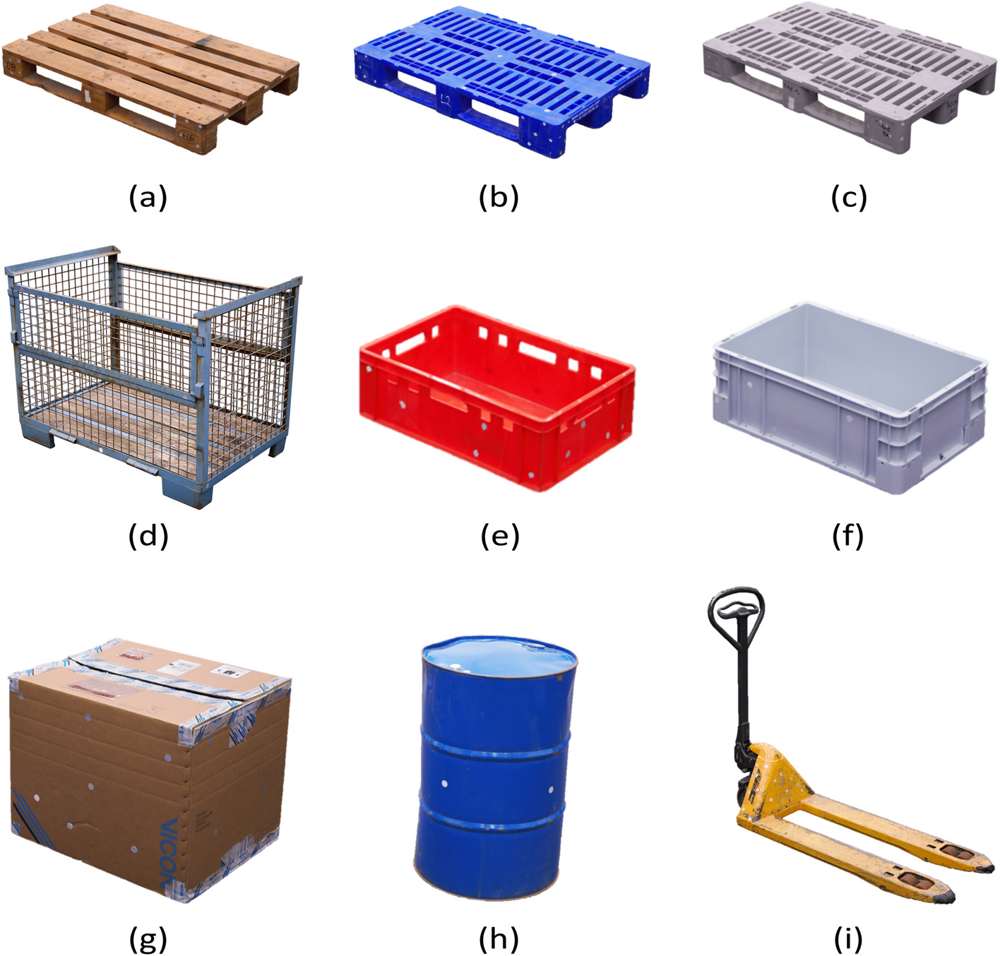
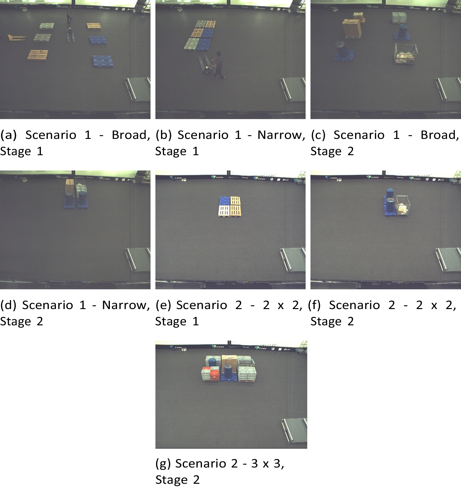
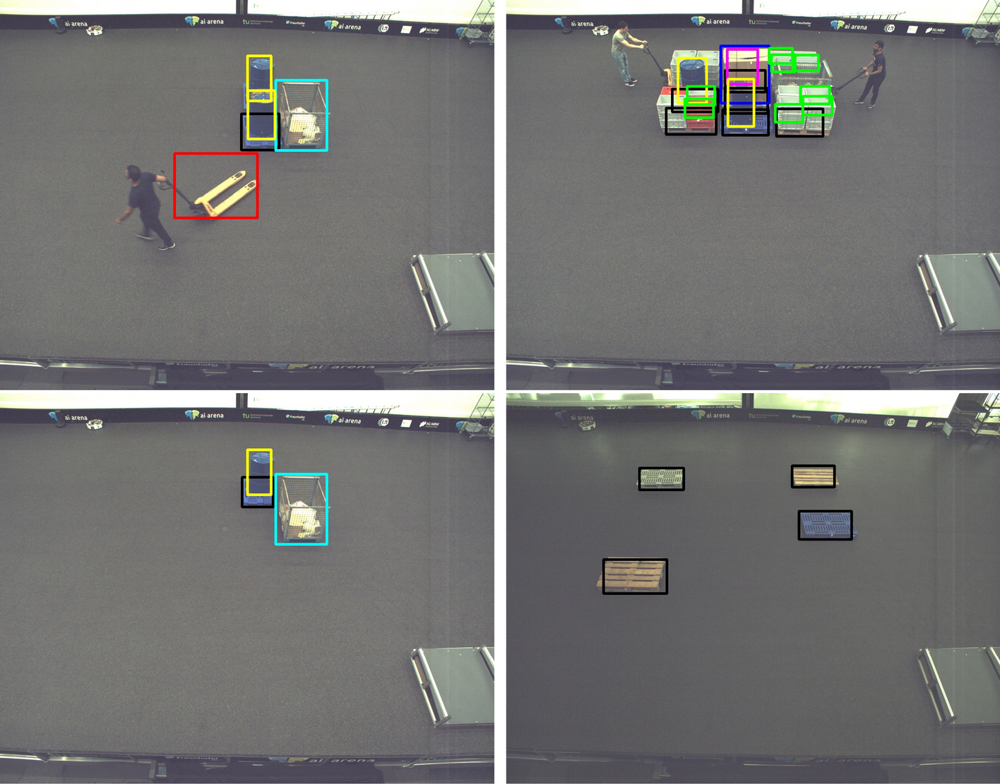

라이선스와 실제 팔레트 형상은 확인했지만, 고정 q의 D/E 학습 라벨은 준비돼 있지 않습니다. 원시 RGB의 작은 표본부터 확인할 후보로 남깁니다. 전체 압축파일이나 모델은 받지 않았습니다.
공식 Zenodo(CC BY 4.0) · 공식 논문 · 상세 근거 JSON
| 확인 | 한계 |
|---|---|
| 목재 Euro 및 위생형 팔레트, 실제 적재물과 주변 물체 | 높은 시점에서 구조 접합부가 작음. 원시 프레임의 cue 해상도 미확인 |
| 공개 6개 ZIP, 총 38.29 GB | 최소 파일 약 4.99 GB. 이 작업에서 archive 본문 다운로드 0 |
| pose/ID/projected bbox, 카메라 FOV 플래그 | 다른 물체에 의한 특정 cue의 가림 라벨이 아님. AABB corner를 native 정답으로 쓰면 안 됨 |
다음 최소 작업은 원시 RGB·CSV 12개를 metadata로 먼저 고정해 실제 접합부와 blocker가 판독되는지 확인하는 것입니다. 부분 다운로드 경로도 아직 검증하지 않았습니다. 물리 팔레트/연속 시간/동기 카메라를 같은 묶음으로 보존해야 합니다. 이 그림은 논문에 실린 예시이며 학습 RGB나 D/E gold가 아닙니다.


